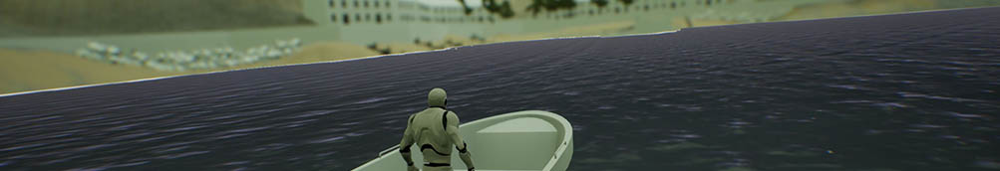
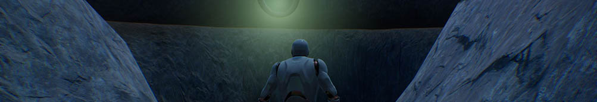

Accursed: Khulman's Tale was a project I developed over a couple of weeks given a brief of style, setting and technical requirements. The project had to have a Lovecraftian feel and hit four stages: arrival (in the village), entrance (in a building), descent (into caves), madness (the other place). Any other design, layout, story, and additional style choice was left to my decision.
The levels I created satisfied the brief and allowed the player a range of freedom without being too restrictive. Objectives were clearly pointed and the design was clearly focused towards where the player should head. Level design tricks were used such as valves within the caves (the rockfall) requiring you to continue forwards, and a landmark structure in the form of a radio tower which allows the player to orientate themselves within the island.
Along with the levels and demo I produced a design document which detailed my process of creating the levels from initial concept to design inspiration to finished product. A number of sources were referenced for the design of the island and the "unknown" (other place) including real life locations in Scotland and Somerset, as well as fictional places such as Xen from the fan-made Half-Life title Black Mesa.
The finished demo came out quite nicely in my opinion, with a good set of the required technical features and interactions also specified in the brief (effects, scripted sequences, object pull/push, and more) and an interesting narrative that suits a Lovecraft setting.
The final project can be downloaded below along with my design documentation: